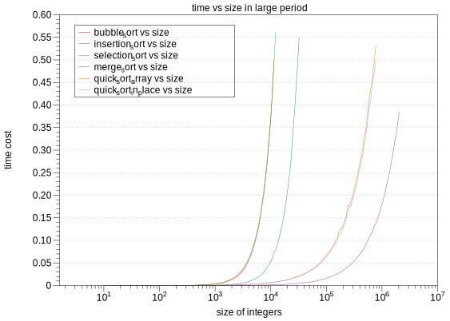
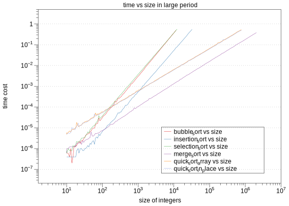
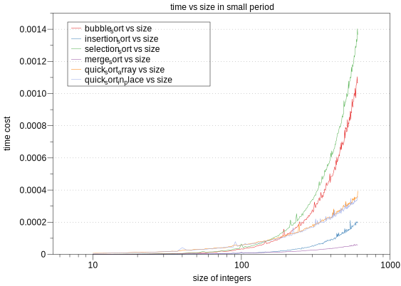
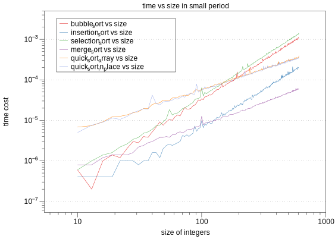

program
Performances of Six Sorting Algorithms
- 2018-09-23
- 胡炳城, Bingcheng
In order to study the performances of these six sorting algorithms, I generated different size of arrays and compared the running speed of them. Small size of arrays were run for several times so that the result can be more accurate.
Introduction
In order to study the performances of these six sorting algorithms, I generated different size of arrays and compared the running speed of them. Small size of arrays were run for several times so that the result can be more accurate.
Comparison of algorithms
The limitation of runtime was set to 1s for all algorithms, so some meaningless and slow running were dropped (eg. large array size for bubble sort). Then I used DataGrapg to plot two graphs, one of small test cases, and another of all cases.
Loop several times
With #define LOOP_TIME 5 we can run it for 5 times so that the result can be more accurate. (Please check performance.cpp)
long time_all = 0;
for (int lo = 0; lo < LOOP_TIME; lo++)
{
int arr_copy[lines];
//use deep copy to make arr_copy evry turn
memset(arr_copy,0, lines*sizeof(int));
memcpy(arr_copy,arr, lines*sizeof(int));
start = clock();
fn[i](arr_copy, lines);
end = clock();
time_all += (end - start);
}
cout<<"Sort algorithm is ["<<sortName[i]<<"],";
double time_run = (double)time_all / CLOCKS_PER_SEC / LOOP_TIME;
cout << "Running time: " <<time_run<< endl;Big data analysis
From Figure 1, all these line looks similar, so it’s meaning less. So we make log at both x and y axis. As Figure 2 shows, we can find that bubble sort, insertion sort and selection sort have the similarrunning speed, while merge sort and quick sort are also similar on running speed, but faster. The result satisfy the theory that bubble sort, insertion sort and selection sort have time complexity of O(n^2^), while merge sort and quick sort have time complexity of O(nlogn).


Small data analysis
From Figure 4 we can see that when the data size is small (from 10 to 100), merge sorting and quick sorting run slower than insertion sorting. This is because the constant c is more important when n is small.


Appendix
The project files
sort.h
#ifndef SORT_H
#define SORT_H
#include <cstdlib>
void bubble_sort(int arr[], const int n);
// MODIFIES: *arr
// EFFECTS: sort integers arr[] in ascending order with bubble_sort.
void insertion_sort(int arr[], const int n);
// MODIFIES: *arr
// EFFECTS: sort integers arr[] in ascending order with insertion_sort.
void selection_sort(int arr[], const int n);
// MODIFIES: *arr
// EFFECTS: sort integers arr[] in ascending order with selection_sort.
void merge_sort(int arr[], const int n);
// MODIFIES: *arr
// EFFECTS: sort integers arr[] in ascending order with merge_sort.
void quick_sort_array(int arr[], const int n);
// MODIFIES: *arr
// EFFECTS: sort integers arr[] in ascending order with quick_sort by array.
void quick_sort_in_place(int arr[], const int n);
// MODIFIES: *arr
// EFFECTS: sort integers arr[] in ascending order with quick_sort by in_place.
#endif //SORT_Hsort.cpp
#include <iostream>
#include <cstdlib>
#include <cassert>
#include "sort.h"
#define TEST_ORDER //test whether arr[] is well sorted.
using namespace std;
#ifdef TEST_ORDER
static void order_test(int *arr, const int n){
// EFFECTS: assert if arr is not in ascending order.
for (int i = 1; i < n; ++i)
{
if (arr[i] < arr[i-1])
{
cerr<<arr[i-1]<<", "<<arr[i]<<endl;
}
assert(arr[i] >= arr[i-1]);
}
}
#endif
void bubble_sort(int *arr, const int n){
for (int i = n-1; i >0; i--)
{
for (int j = 0; j < i; ++j)
{
if (arr[j]>arr[j+1]){
swap(arr[j], arr[j+1]);
}
}
}
#ifdef TEST_ORDER
order_test(arr, n);
#endif
}
void insertion_sort(int *arr, const int n){
for (int i = 1; i < n; ++i)
{
int t = arr[i];
int j = i;
while (j >= 1)
{
if (arr[j - 1] > t)
{
arr[j] = arr[j - 1];
j--;
}
else break;
}
arr[j] = t;
}
#ifdef TEST_ORDER
order_test(arr, n);
#endif
}
void selection_sort(int* arr, const int n){
for (int i = 0; i < n; ++i)
{
int t = arr[i];
int k = i;
for (int j = i; j < n; j++)
{
if(arr[j] < t) {
k = j;
t = arr[k];
}
}
swap(arr[k], arr[i]);
}
#ifdef TEST_ORDER
order_test(arr, n);
#endif
}
static void int_append(int *arrA, const int *arrB, const int s){
// MODIFIES: *arrA
// EFFECTS: append first "s" int in arrB tp the biginning if arrA.
assert(s >= 0);
if(s == 0) return;
for (int i = 0; i < s; ++i)
{
arrA[i] = arrB[i];
}
}
static void merge(int *arr, int left, int mid, int right){
// MODIFIES: *arr
// EFFECTS: merge [left, mid] and (mid, right] together.
int i = 0, j = 0, k = 0;
int sizeA = mid - left + 1;
int sizeB = right - mid;
int sizeC = right - left + 1;
int * C = new int[sizeC];
int * A = arr + left;
int * B = arr + mid + 1;
while(i < sizeA && j < sizeB){
if(A[i] < B[j]) C[k++] = A[i++];
else C[k++] = B[j++];
}
if(i == sizeA) int_append(C+k, B+j, sizeC - k );
else int_append(C+k, A+i, sizeC - k );
int_append(arr + left, C, sizeC);
delete[] C;
}
static void merge_helper(int *arr, int left, int right){
// MODIFIES: *arr
// EFFECTS: helper of the merge_sort function.
if (left >= right) return;
int mid = (left+right)/2;
merge_helper(arr, left, mid);
merge_helper(arr, mid+1, right);
merge(arr, left, mid, right);
}
void merge_sort(int *arr, const int n){
merge_helper(arr, 0, n-1);
#ifdef TEST_ORDER
order_test(arr, n);
#endif
}
static int partition_array(int *arr, int left, int right){
// MODIFIES: *arr
// EFFECTS: choose a pivotat then Move pivot to its correct place in the array.
const int size = right - left + 1;
int BL = 0, BR = size-1;
int * B = new int[size];
int * A = arr + left;
srand((unsigned)time(NULL));
const int pivotat = rand()%size;
const int t = A[pivotat];
for (int i = 0; i < size; ++i)
{
if(i == pivotat) continue;
if(A[i] > t) B[BR--] = A[i];
else B[BL++] = A[i];
}
assert(BL == BR);
B[BL] = t;
int_append(A, B, size);
delete[] B;
return BL + left;
}
static void quick_sort_helper(int *arr, int left, int right) {
// MODIFIES: *arr
// EFFECTS: helper of the quick_sort_array function.
int pivotat; // index of the pivot
if(left >= right) return;
pivotat = partition_array(arr, left, right);
quick_sort_helper(arr, left, pivotat-1);
quick_sort_helper(arr, pivotat+1, right);
}
void quick_sort_array(int arr[], const int n){
quick_sort_helper(arr, 0, n-1);
#ifdef TEST_ORDER
order_test(arr, n);
#endif
}
static int partition_in_place(int *arr, int left, int right){
// MODIFIES: *arr
// EFFECTS: choose a pivotat then Move pivot to its correct place in the array.
const int size = right - left + 1;
int AL = 1, AR = size - 1;
int * A = arr + left;
srand((unsigned)time(NULL));
const int pivotat = rand()%size;
const int t = A[pivotat];
swap(A[0], A[pivotat]);
while(true){
while(A[AL] < t && AL < size - 1) AL++;
while(A[AR] >= t && AR > 0) AR--;
if(AL < AR) swap(A[AL], A[AR]);
else break;
}
swap(A[0], A[AR]);
return left + AR;
}
static void quick_sort_in_place_helper(int *arr, int left, int right) {
// MODIFIES: *arr
// EFFECTS: quick_sort_in_place_helper
int pivotat; // index of the pivot
if(left >= right) return;
pivotat = partition_in_place(arr, left, right);
quick_sort_in_place_helper(arr, left, pivotat-1);
quick_sort_in_place_helper(arr, pivotat+1, right);
}
void quick_sort_in_place(int arr[], const int n){
quick_sort_in_place_helper(arr, 0, n-1);
#ifdef TEST_ORDER
order_test(arr, n);
#endif
}main.cpp
#include <iostream>
#include <cstdlib>
#include <cassert>
#include "sort.h"
using namespace std;
#define SORT_WAY_SIZE 6
// #define SORT_DEBUG
#define STANDARD_OUTPUT
const string sortName[] = {
"bubble_sort", "insertion_sort", "selection_sort",
"merge_sort", "quick_sort_array", "quick_sort_in_place",
"ERROR_SORT_NAME"
};
int main(int argc, char *argv[]) {
void (*const fn[SORT_WAY_SIZE])(int*, const int) = {
bubble_sort,
insertion_sort,
selection_sort,
merge_sort,
quick_sort_array,
quick_sort_in_place
};
int sort_algorithm;
cin >> sort_algorithm;
assert(sort_algorithm >= 0 && sort_algorithm < SORT_WAY_SIZE);
#ifdef SORT_DEBUG
cout<<"Sort algorithm is ["<<sortName[sort_algorithm]<<"],"<<endl;
#endif
int n;
cin >> n;
int *arr = new int[n];
for (int i = 0; i < n; ++i)
{
cin>>arr[i];
}
#ifdef SORT_DEBUG
clock_t start, end;
start = clock();
#endif
fn[sort_algorithm](arr, n);
#ifdef SORT_DEBUG
end = clock();
#endif
#ifdef STANDARD_OUTPUT
for (int i = 0; i < n; ++i)
{
cout << arr[i] <<endl;
}
#endif
#ifdef SORT_DEBUG
cout << "Running time: " << (double)(end - start) / CLOCKS_PER_SEC << " s." << endl;
#endif
delete[] arr;
return 0;
}Makefile
all: main.o sort.o
g++ -std=c++11 -g -Wall -o main main.o sort.o
main.o: main.cpp
g++ -std=c++11 -g -Wall -c main.cpp
sort.o: sort.cpp
g++ -std=c++11 -g -Wall -c sort.cpp
run:
./main < input.txt
val:
valgrind --leak-check=full ./main < 1000num
tar:
tar czvf p1.tar main.cpp sort.cpp sort.h Makefile Bingchneg_repo_1.pdf
clean:
rm -f ./main *.o
auto_gen.cpp
#include <iostream>
#include <stdlib.h>
#include <sstream>
#include <assert.h>
#include <fstream>
#include <math.h>
using namespace std;
int main(int argc, char *argv[]) {
ofstream oFile;
for (int i = 0; i < 100; ++i)
{
ostringstream path_stream;
path_stream<<i<<".txt";
oFile.open(path_stream.str());
double k = 1.0 + 6.0/100*(i);
int ek = pow(10, k);
cerr<<ek<<", ";
oFile<<ek<<endl;
oFile<<ek<<endl;
for (int i = 0; i < ek; ++i)
{
int k = mrand48();
oFile << k <<endl;
}
oFile.close();
}
}Generated files look like this.

performance.cpp
This program will produce a CSV table as 3.1.7 shows.
#include <iostream>
#include <iomanip>
#include <sstream>
#include <cstdlib>
#include <string.h>
#include <assert.h>
#include <ctime>
#include <fstream>
#include "sort.h"
using namespace std;
#define SORT_WAY_SIZE 6
#define file_num 200
#define LOOP_TIME 5
// #define SORT_DEBUG
void debug_print(char TAG, string deb_string){
if(TAG == 'v') cerr<< deb_string;
}
void Delay(int time){
clock_t now = clock();
while(clock() - now < time);
}
const string sortName[] = {
"bubble_sort", "insertion_sort", "selection_sort",
"merge_sort", "quick_sort_array", "quick_sort_in_place",
"ERROR_SORT_NAME"
};
bool safe_open_file(ifstream& i_file, string file_name){
ostringstream debug_stream;
i_file.open(file_name.c_str());
if (i_file.fail()) {
cout<<"Error: Cannot open file "<< file_name<<"!"<<endl;
exit(0);
}
debug_stream<<"file opened success!"<<endl;
debug_print('v', debug_stream.str());
debug_stream.clear();
return true;
}
static int int_size[] = {
10, 13, 16, 19, 22, 25, 28, 31, 34, 37, 40, 43, 46, 49, 52, 55, 58, 61, 64, 67, 70, 73, 76, 79, 82, 85, 88, 91, 94, 97, 100, 103, 106, 109, 112, 115, 118, 121, 124, 127, 130, 133, 136, 139, 142, 145, 148, 151, 154, 157, 160, 163, 166, 169, 172, 175, 178, 181, 184, 187, 190, 193, 196, 199, 202, 205, 208, 211, 214, 217, 220, 223, 226, 229, 232, 235, 238, 241, 244, 247, 250, 253, 256, 259, 262, 265, 268, 271, 274, 277, 280, 283, 286, 289, 292, 295, 298, 301, 304, 307, 310, 313, 316, 319, 322, 325, 328, 331, 334, 337, 340, 343, 346, 349, 352, 355, 358, 361, 364, 367, 370, 373, 376, 379, 382, 385, 388, 391, 394, 397, 400, 403, 406, 409, 412, 415, 418, 421, 424, 427, 430, 433, 436, 439, 442, 445, 448, 451, 454, 457, 460, 463, 466, 469, 472, 475, 478, 481, 484, 487, 490, 493, 496, 499, 502, 505, 508, 511, 514, 517, 520, 523, 526, 529, 532, 535, 538, 541, 544, 547, 550, 553, 556, 559, 562, 565, 568, 571, 574, 577, 580, 583, 586, 589, 592, 595, 598, 601, 604, 607};
bool jump_j[] = {false, false,false,false,false,false};
int main(int argc, char *argv[]) {
void (*const fn[SORT_WAY_SIZE])(int*, const int) = {
bubble_sort,
insertion_sort,
selection_sort,
merge_sort,
quick_sort_array,
quick_sort_in_place
};
clock_t start, end;
ofstream outFile;
outFile.open("data.csv", ios::out);
outFile << "size"<<","<<"bubble_sort"<<","
<<"insertion_sort"<<","<<"selection_sort"<<
","<<"merge_sort"<<","<<"quick_sort_array"<<
"," <<"quick_sort_in_place"<<","<<endl;
for (int j = 0; j < file_num; ++j)
{
ifstream iFile;
ostringstream path_stream;
path_stream<<j<<".txt";
safe_open_file(iFile, path_stream.str());
int lines;
iFile >> lines;
iFile >> lines;
int *arr = new int[lines];
int baz;
for (int i = 0; i < lines; ++i)
{
iFile >> baz;
arr[i] = baz;
}
outFile << int_size[j]<<",";
for (int i = 0; i < SORT_WAY_SIZE; ++i)
{
if(jump_j[i] == true){
outFile << ""<<",";
cerr<<"jump "<<sortName[i]<<" with "<<int_size[j]<<" size!"<<endl;
continue;
}
if(int_size[j] < 1000){
cerr<<"delay at "<<int_size[j]<<" size"<<endl;
Delay(1000);
} else Delay(500);
long time_all = 0;
for (int lo = 0; lo < LOOP_TIME; lo++)
{
int arr_copy[lines];
//use deep copy to make arr_copy evry turn
memset(arr_copy,0, lines*sizeof(int));
memcpy(arr_copy,arr, lines*sizeof(int));
start = clock();
fn[i](arr_copy, lines);
end = clock();
time_all += (end - start);
}
cout<<"Sort algorithm is ["<<sortName[i]<<"],";
double time_run = (double)time_all / CLOCKS_PER_SEC / LOOP_TIME;
cout << "Running time: " <<time_run<< endl;
if (time_run >= 0.5)
{
jump_j[i] = true;
}
outFile << time_run<<",";
}
outFile <<endl;
iFile.close();
delete[] arr;
}
outFile.close();
return 0;
}scv Table
You can get full CSV table at HERE.
This table was generated by MacBook Pro 2015, i5, 256G.
| size | bubble_sort | insertion_sort | selection_sort | merge_sort | quick_sort_array | quick_sort_in_place |
|---|---|---|---|---|---|---|
| 10 | 3.00E-06 | 1.00E-06 | 1.00E-06 | 5.00E-06 | 1.50E-05 | 3.00E-06 |
| 11 | 2.00E-06 | 2.00E-06 | 2.00E-06 | 4.00E-06 | 5.00E-06 | 3.00E-06 |
| 13 | 2.00E-06 | 2.00E-06 | 1.00E-06 | 5.00E-06 | 6.00E-06 | 4.00E-06 |
| 15 | 3.00E-06 | 1.00E-06 | 1.00E-06 | 5.00E-06 | 6.00E-06 | 4.00E-06 |
| 17 | 3.00E-06 | 1.00E-06 | 3.00E-06 | 8.00E-06 | 9.00E-06 | 6.00E-06 |
| 19 | 3.00E-06 | 2.00E-06 | 3.00E-06 | 1.30E-05 | 1.00E-05 | 7.00E-06 |
| … | … | … | … | … | … | … |
| 239 | 0.001231 | 0.000527 | 0.001228 | 0.000165 | 0.000232 | 0.000198 |
| … | … | … | … | … | … | … |
| 8709 | 24.3195 | 5.59928 | 17.9863 | 0.025044 | 0.034387 | 0.024112 |
DataGraph
I used DataGraph to generate images on MacBook Pro.